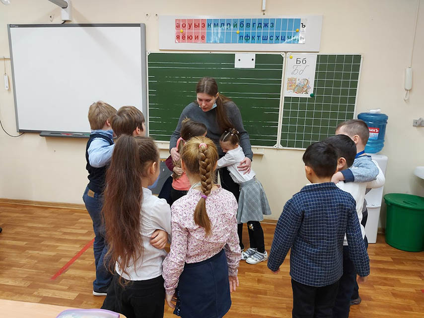

Работа с тревогой
Екатерина специализируется на терапии тревоги и обучении методам и техникам работы с тревогой.
Психотерапевт помогает пациенту выявить мысли, которые вызывают тревогу и негативные эмоции, действия, которые человек выполняет «на автомате».
Пациент учится изменять их на положительные, конструктивные. Так человек избавляется от мыслей, которые провоцируют тревожное расстройство.
Работа с прокрастинацией и отсутствием мотивации
Психотерапевт помогает проанализировать текущую жизненную ситуацию: что забирает ресурсы, а что дает.
Разобраться в историях жизни, моделях поведения и конструкциях мышления.
А после подробного анализа скорректировать неэффективные внутренние установки и найти новые мотивы и методы для достижения реальных изменений в жизни.
Поддерживает и помогает на пути к Себе!
Работа с трудными подростками и детьми ОВЗ
Екатерина работает с подростками, детьми с различной нозологией ограниченных возможностей здоровья.
Работа с детьми с ОВЗ предусматривает создание специальных условий обучения и воспитания, позволяющих учитывать особые образовательные потребности детей с ограниченными возможностями здоровья посредством индивидуализации и дифференциации образовательного процесса.